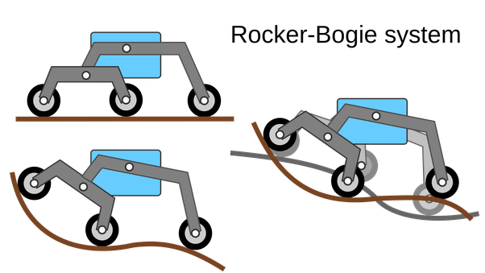
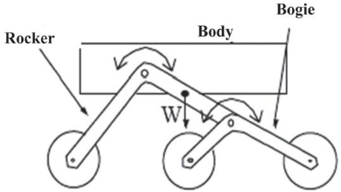
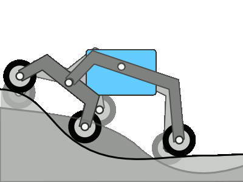
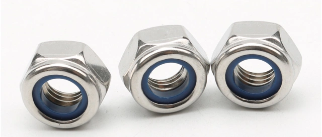

Note
Hello, welcome to the SunFounder Raspberry Pi & Arduino & ESP32 Enthusiasts Community on Facebook! Dive deeper into Raspberry Pi, Arduino, and ESP32 with fellow enthusiasts.
Why Join?
Expert Support: Solve post-sale issues and technical challenges with help from our community and team.
Learn & Share: Exchange tips and tutorials to enhance your skills.
Exclusive Previews: Get early access to new product announcements and sneak peeks.
Special Discounts: Enjoy exclusive discounts on our newest products.
Festive Promotions and Giveaways: Take part in giveaways and holiday promotions.
👉 Ready to explore and create with us? Click [here] and join today!
Lesson 2 Understanding and Making Rocker-Bogie System
In our previous lesson, we learned about the Mars rovers and their basic structure. One interesting aspect that we notice when looking at the evolution of Mars rovers is the consistency in their suspension system. Despite the advancement in technology, all the rovers from Sojourner to Perseverance have been designed using a similar type of suspension system known as the Rocker-Bogie system.
But why stick with the Rocker-Bogie system, you might wonder? What benefits does this particular design offer for Mars exploration?

In today’s lesson, we’re going to dig deeper into the science and engineering behind the Rocker-Bogie system, then build one.
Let’s embark on this exciting engineering journey!
Learning Objectives
Understand the design principle of the Rocker-Bogie suspension system and its advantages.
Learn how to design and make a basic model of the Rocker-Bogie suspension system.
Apply basic principles of physics to explain how the Rocker-Bogie suspension system overcomes complex terrains.
Materials
Blueprints and reference materials (such as NASA Mars Rover design drawings and videos on how the Rocker-Bogie suspension system works)
Mars Rover structure kit
Basic tools and accessories (e.g. screwdriver, screws, etc.)
Steps
Step 1: Unraveling the Rocker-Bogie System
The Rocker-Bogie system is like a mountain goat of mechanics - designed to keep all wheels of the rover grounded while it navigates over rough and rocky terrains. It’s specially built for handling Mars’ unpredictable landscape, including steep inclines and sizable boulders. This system skips springs and instead leverages the geometry of its six wheels and their interactions to conquer tricky terrain. It’s a shining example of how clever mechanical design can surmount environmental hurdles.
Let’s dive into the two main parts of this system - the “rocker” and the “bogie”.

The “rocker” part of the system is like the two large limbs on either side of the rover’s body. These limbs, or rockers, connect to each other and the rover’s body, or chassis, through a mechanism called a differential. Just like two legs walking, the rockers rotate in opposite directions relative to the chassis, making sure that most of the wheels keep in contact with the ground. The body of the rover maintains the average angle of both rockers. One end of a rocker connects to a wheel, while the other end connects to the bogie.
The “bogie” part of the system is like a mini-limbed creature attached to the rocker. It’s a smaller linkage system that pivots in the middle to the rocker and has a wheel at both ends.
With this basic understanding, let’s hop to the next step of our adventure.
Step 2: Seeing the System in Action
Below is a GIF that showcases the unique features of the Rocker-Bogie suspension system and illustrates how it enables Mars rovers to navigate the challenging Martian terrain.

After watching the gif, let’s have a discussion! Think about these questions:
Why do you think the Rocker-Bogie suspension system is suitable for Mars exploration?
Can you describe how the Rocker-Bogie system works in your own words?
What are the key features of the Rocker-Bogie system that help the rovers to negotiate rough terrain?
Feel free to share your thoughts and insights about the Rocker-Bogie suspension system.
Step 3: Building it
Now that we’ve learned about the Rocker-Bogie system, it’s time to build our own.
Materials you need:
GalaxyRVR Kit
Basic tools like screwdriver and wrench
Follow the steps provided in the assembly instructions of the GalaxyRVR Kit to construct the suspension system of the Rover.
Please note that patience and precision are essential here, make sure you correctly place every piece and secure it tightly.
In the meantime, discuss with your peers about the design and function of each component you are assembling. This will not only help in understanding the design but also its practical application in Mars exploration.
Remember, don’t worry if you encounter any issues during the assembly or testing. This is all part of the engineering process! Troubleshooting problems is how we learn and innovate.
Step 4: Summary and Reflection
During the assembly of the suspension system, did you notice that all the moving parts utilize self-locking nuts? Have you ever wondered why?

Self-locking nuts are a type of fastener that includes a rubber ring inside a regular nut. This design ensures that the assembled parts won’t easily loosen and fall off due to vibrations during movement.
In addition, it also ensures that the parts can rotate within a certain range.
So during assembly, you need to tighten the screw and self-locking nut with a socket and screwdriver first, then loosen it a bit. This ensures that there’s room for free rotation between the parts without them being too loose.
In this lesson, we not only learned about the Rocker-Bogie System but also built one ourselves. Furthermore, we can manually simulate how it allows the Mars Rover to move smoothly over various rough terrains.
Armed with this knowledge and experience, we are now better equipped to venture deeper into the unknown realms of Martian exploration. Let’s continue to unravel the mysteries of the red planet.